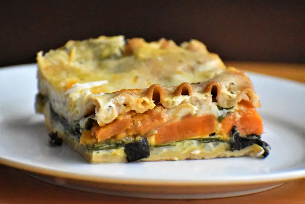

Lasagna

Description
Lasagna is a type of pasta that is shaped in the form of sheets or wide strips
It is made using by stacking layers of lasagne, alternating with various fillings such as vegetables, cheese, meat, etc.
Lasagna is a simple to make and warm dish, perfect for any dinner
Ingredients
- 1 butternut squashed
- 1 tablespoon olive oil
- 1 package sliced fresh mushrooms
- 1 teaspoon minced garlic
- 1 onion(chopped)
- 1 package chopped spinach
- 7 cups milk
- 1/2 cup cornstarch
- 2 cups parmesan cheese
- 1 tablespoon honey
- 1/4 teaspoon ground nutmeg
- 4 fresh sage leaves
- Salt and Black Pepper(to taste)
- 1 package lasanga noodles
- 1/4 teaspoon minced fresh garlic
- 2 cups mozzarella cheese
Steps
- Preheat oven to 230 degrees C and line a baking sheet with aluminium foil
- Place squash (cut side-up) on baking sheet and cover with aluminium foil
- Bake in oven until squash is tender
- Heat 1 + 1/2 teaspoons olive oil; cook garlic and mushrooms in hot oil until tender, then remove from heat
- Repeat above step with onion until soft (seperate vessel)
- Heat 6 cups milk in a saucepan over medium heat; cook until milk simmers. Whisk 1 cup milk and cornstarch in a bowl until smooth and stir into simmering milk. Bring milk to boil, stirring constantly until milk texture turns to a sauce; remove from heat
- Whisk parmesan, honey, nutmeg, sage, salt and pepper into sauce until smooth and warm over a low heat with a closed lid on top
- Cook lasagna noodles in lightly salted boiling water and drain water
- Reduce oven temperature to 190 degrees C
- Scrape flesh from butternut squash into a bowl and stir ginger, salt and pepper into it
- Layer a 1/5th of white sauce, alternating between prepared fillings; cover dish with aluminium foil and place on a baking sheet
- Bake in oven for 30 minutes. Remove cover and bake until bubbling; let it stand for 10 minutes and serve